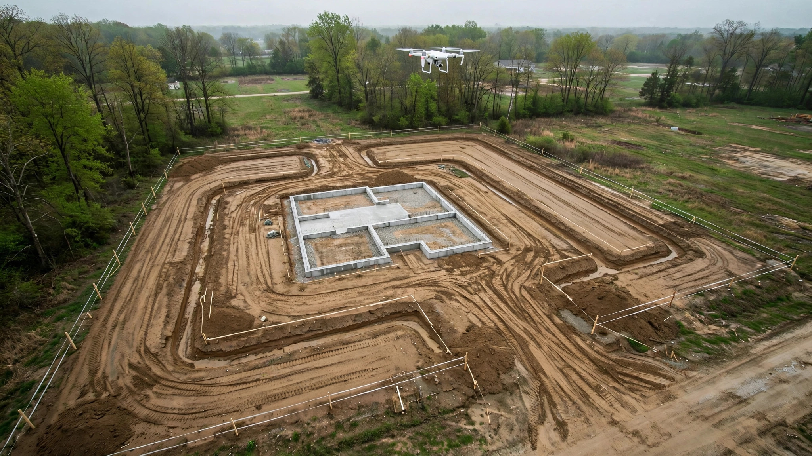

An AI Grades a 2,000-Acre Solar Farm in Hours. Your Half-Acre Lot Got a Guy on a Bulldozer and a Four-Foot Level.
The call comes about fourteen months after closing. Water in the basement. Not a pipe burst, not a roof leak. Surface water running toward the foundation instead of away from it.
So the homeowner hires an inspector. Inspector walks the perimeter with a level and a tape measure, spends maybe twenty minutes outside, and writes a report that says what everybody on the crew already knew: the lot grades wrong. Soil settled after backfill. The six-inch drop over ten feet that the International Residential Code requires under Section R401.3 has flattened to two inches in some spots and reversed to negative slope in others.
Foundation repair runs $4,500 on the low end for a crack seal. Structural underpinning starts at $8,000 and climbs fast. Regrading the lot with proper compacted fill is another $2,000 to $5,000. Mold remediation in the basement, if it got that far, adds $3,000 to $10,000. Total exposure on a call that started with a damp corner: $12,000 to $28,000.
And the verification that would have caught it before backfill? Nobody ran it.
What the commercial side already does
Kimley-Horn, the 7,000-person engineering firm, has built more than a dozen AI tools for automated site grading on large developments. On a 2,000-acre solar farm project, their custom AI analyzes topographic maps and LiDAR scans, then optimizes the grading design to minimize earthwork costs versus structural steel. Andy Otto, Kimley-Horn's chief innovation officer, told the American Society of Civil Engineers in July 2026 that AI can "accelerate the first 10%, 20%, 30%, maybe even 40%" of grading design work.
Autodesk sells InfoDrainage, which includes a machine-learning tool called ML Deluge. It generates flood maps in seconds, not hours. A drainage engineer places a pond or swale on the model, and the AI instantly regenerates surface water flow patterns. Redesign a stormwater control, see the result before leaving the screen. The 2027 release adds deeper Civil 3D integration for seamless back-and-forth between the hydraulic model and the site design.
Drone photogrammetry is routine on any commercial job over $5 million. Fly the site after rough grading, stitch the images into a 3D surface model, overlay the design grade, and get a color-coded heat map showing where the actual surface deviates from plan. Cut-fill verification to within an inch. The contractor gets a corrective punch list before a single foundation form goes up.
None of this is experimental. None of it is expensive relative to the project. And none of it is aimed at the 900,000 single-family homes started in the United States every year.
What happens on a half-acre residential lot
A civil engineer or surveyor sets grade stakes. An excavation contractor grades to those stakes using a bulldozer or skid steer, reading cut and fill depths from hubs. The operator is experienced. The work is good enough. Usually.
Verification is where the process collapses. On a residential site, the builder walks the lot after grading and maybe checks a few spots with a four-foot spirit level. If the site looks right, backfill proceeds. Foundation forms go in. Concrete pours. Landscaping goes on top. And nobody measures the finished grade with anything approaching the precision of the original survey.
Settlement is inevitable. Backfill soil compresses over 12 to 24 months. Topsoil over utility trenches sinks. Landscaping crews add mulch beds against the foundation, creating dams that hold water exactly where it should drain away. By the time the grade has visibly changed, the foundation has been absorbing moisture for a year.
The American Insurance Association reports that water damage claims have been growing faster than other components of homeowners insurance. Twenty percent of all homeowners' insurance claims involve water damage. The proximate cause, more often than not, is surface water that should have been directed away from the structure.
The IRC wrote the spec. Nobody checks the work.
International Residential Code Section R401.3 is clear: "Lots shall be graded to drain surface water away from foundation walls. The grade shall fall a minimum of 6 inches within the first 10 feet." Where lot lines, walls, or slopes make that impossible, the code allows alternative drainage measures like swales or drains.
The requirement is binary. Six inches in ten feet, or provide an engineered alternative. A 5% slope measured from the foundation wall outward. It is, by any measure, a simple geometric check.
A phone built after 2020 with a LiDAR sensor can measure elevation changes to within a centimeter over short distances. Every iPhone Pro, every iPad Pro has one. Walk the perimeter, take readings at two-foot intervals, and you could generate a pass/fail report against R401.3 in fifteen minutes.
Nobody has built that app.
Conduit Tech built a LiDAR scanning tool that creates 3D models of home interiors for HVAC load calculations. An HVAC contractor scans an 1,800-square-foot home in fifteen minutes and gets a room-by-room Manual J calculation. Interior surface measurement technology is sizing air conditioners. But that same sensor, pointed at the exterior grade, could verify that the lot drains correctly. It is not being used for that.
What the right tool would cost
An $800 consumer drone with a decent camera and a $200-per-year photogrammetry subscription can generate the same kind of surface verification that commercial sites get from a $15,000 survey-grade drone and a $5,000-per-seat software license. Resolution is lower. Accuracy is measured in inches instead of fractions of an inch. For a residential lot where the spec is six inches of fall over ten feet, that precision is more than sufficient.
A single flight would take thirty minutes. Fly the lot. Process the images. Overlay the design grade. Flag deviations. Print the report. Attach it to the inspection file. Total marginal cost per lot: $30 to $50 in software and flight time, assuming the builder already owns the drone.
For a builder running fifty homes a year, that is $1,500 to $2,500 annually. One avoided warranty callback for foundation water intrusion pays for three years of verification flights.
For a home inspector doing pre-purchase evaluations, a phone-based LiDAR grade check could be a differentiator. Walk the perimeter, generate a grade compliance report, hand the buyer objective data instead of "the grading looks okay from here." InterNACHI's own guidance on lot drainage inspection in expansive soils notes that proper lot drainage evaluation often "requires a level of expertise that can only be conveyed by other professionals." An app that automates the geometric check does not replace expertise. It provides the measurement that the expertise should be based on.
Why it has not been built
Three reasons, and none of them are technical.
First, the residential construction industry does not have a culture of post-grading verification. Verification happens in the design phase (engineer stamps the grading plan) and at inspection (building inspector checks that foundation drainage elements are installed). Between the grading contractor finishing and the inspector arriving, nobody is measuring. That gap exists because the process was designed before the tools to fill it were cheap enough to justify.
Second, the liability incentives point the wrong direction. A builder who verifies grade and finds a problem has to fix it before proceeding. A builder who does not verify can plausibly claim the grade met spec at time of backfill and that settlement occurred after handover. Warranty language covers structural defects. Whether a settled grade is a structural defect or a maintenance issue is, generously, debatable.
Third, the companies building AI grading and drainage tools are chasing the commercial market because the per-project revenue is higher. Kimley-Horn's AI grading tools were built for internal use on projects that bill millions. Autodesk's InfoDrainage subscription targets civil engineering firms. Building a $10-per-month phone app for residential grade checks is not where the venture capital is flowing.
What you can do right now
If you are a builder: rent a survey-grade GPS unit for a day after rough grading and before backfill. Walk the perimeter at two-foot intervals. Record elevations. Compare to the grading plan. Total cost: $150 to $300 per lot for equipment rental. If you build more than ten homes a year, buy the unit.
If you are buying a home under construction: ask your builder for the grading plan, then ask what verification was done after grading and before backfill. If the answer is "we eyeballed it," you now know the risk you are accepting. Request a surveyor check. Budget $400 to $600.
If you are a home inspector: get a four-foot digital level with a Bluetooth data logger. Walk the perimeter at the ten-foot mark from the foundation. Record the slope at each reading. Print the data. Attach it to your report. You are not certifying compliance. You are measuring. That data is worth more than your opinion.
If you are buying an existing home: look at the grade before you look at the kitchen. Walk the perimeter after a rain. If water pools within ten feet of the foundation, the grade is wrong. Regrading costs $2,000 to $5,000. Not regrading costs $12,000 to $28,000 eighteen months later.
Tools to automate this verification are sitting inside phones and drones that builders already own. Somebody will build the app eventually. Until then, a tape measure and a level work fine. What does not work is skipping the measurement entirely.